OK, so you're used to using your favorite graphing calculator, and now you're required to use a 10-dollar non-programmable calculator for chemistry. How does this thing work again?
Number Display Mode
Try entering a really small number on your calculator and you'll be overwhelmed by the number of ZEROs that your calculator displays!

Luckily, our calculator can switch between three different number display modes. The "normal" a.k.a. useless mode is called floating point (FLO), and makes large and small numbers painful to read off of the display.
Most of the time we will switch to scientific notation mode (SCI). We can do this be pressing 2nd, then the DRG button, and select SCI by pressing either the left or right arrow then enter.
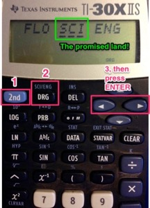
Now our answers will look much tidier!
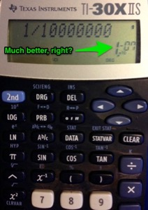
Entering numbers the right way—using Scientific Notation
You can enter numbers in scientific notation using a secret calculator trick that your teachers have been hiding* from you all these years!
This is how we enter a number, like 1.8 × 10–5 on this calculator. Pay attention now, 'cos this will save you tons of time in this course!
Type in 1.8 then press the 2nd button, then the E button, then type –5. Easy, right?
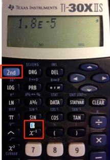 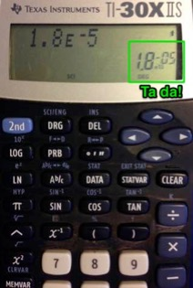
The advantages to entering numbers this way are:
- It's faster then pressing the ×, 10, ^, buttons every time
- When you divide two scientific numbers, your calculator doesn't get so easily confused
- It makes you look much smarter.
Thanks for the memories
Ooh, you've got a complicated math problem with lots of intermediate steps. You calculate one thing, then write it down on the page. Then you do another calculation, and write it down also. Then you have to divide those last two numbers, and that means typing them all back in again, right?
WRONG!
Your TI-30XIIS has five (yes five—count them!) memories that makes this thing a sinch!
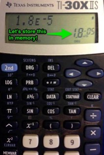
1. Press STO
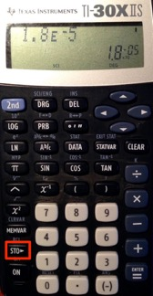
2. Select memory A, B, C, D, or E—then press ENTER.
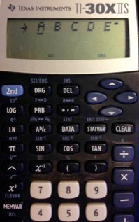

3. Let's say we want to do a calculation involving this stored number, such as 3 divided by 1.8 × 10–5. How can we extract the number from memory?
Type 3 then the divide by button, then hit the magic memory recall button (2nd STO gets you RCL)
 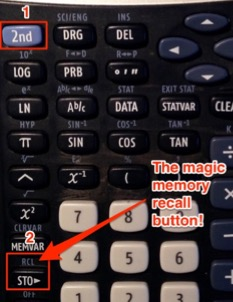
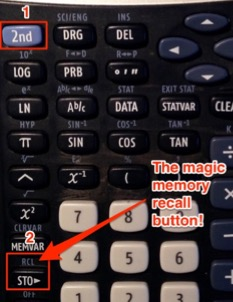Your calculator will then beg you to choose a memory bank to recall from (A – E). Just arrow over to the one you'd like to invite back, then press the ENTER button. Booyah!
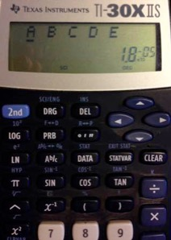 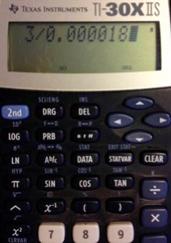

Engineering mode—not just for engineers!
I love SI, you love SI, we all love SI! (Prefixes, that is.)
Remember those pesky SI prefixes? You know, the ones that allow you to write n (nano) instead of ×10–9 or M (mega) in place of ×106? Well, our TI will convert any number on its screen to a multiple of 10±3, which makes it really easy to switch over to an SI prefix.
Let's try our last number: 1.666 × 105. Now, 105 doesn't have a super-duper SI prefix assigned to it, but with a little bit of work we can get our TI calculator to massage the number to make it fit! Yay!
Here's how we do it:
- Press 2nd
- Press DRG
- Arrow left/right to underline ENG, then press ENTER. Ta da!
 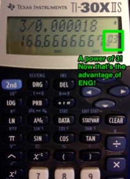
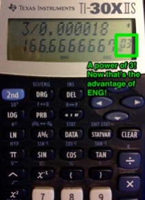Now our number is translated to 166.666 × 103, so that would be 166.666 kilo-somethings! Awesome.
The END.
* Not really—we've actually been begging you to do this since day 1...